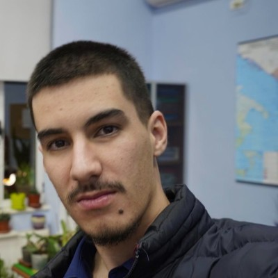

Omid Halimi Milani
Doctoral student · UIC
Computationally efficient deep learning methods and neural signal processing.
The laboratory brings together faculty and graduate researchers working in signal and image processing, computer vision, machine learning, and sensing applications.

Professor Ahmet Enis Cetin directs the laboratory at the University of Illinois Chicago. His research interests include inverse problems, signal and image processing, computer vision, and sensor systems. He received his Ph.D. from the University of Pennsylvania in 1987.
Computationally efficient deep learning methods and neural signal processing.
Computationally efficient deep learning methods and neural signal processing.
Selected research Personal websiteTransform-based machine learning and signal processing.
Selected research
Transform-domain machine learning and wildfire spread prediction.
Selected research| Name | Affiliation / degree |
|---|---|
| Salih Atici | Apple, California |
| Hongyi Pan | Northwestern University |
| Diaa Badawi | Cadence |
| Ouday Hanosh | Doctoral alumnus |
| Xin Zhu | Ph.D., December 2025 |
| Shuaiang Rong | Ph.D., May 2026 |